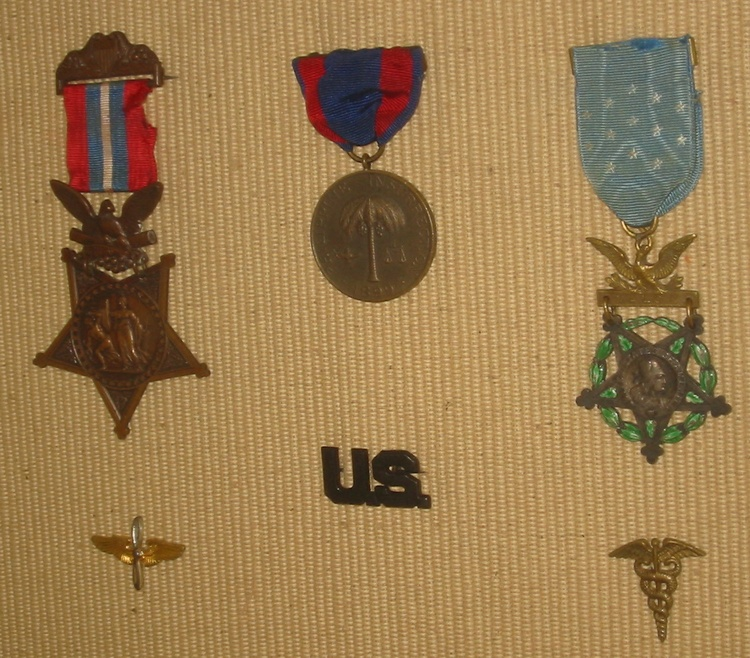
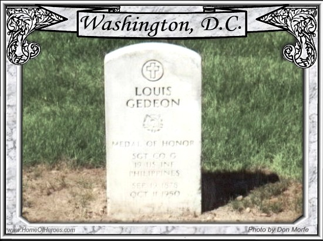

Congressional Medal of Honor
{kind=link}
Louis Gedeon was born on the Southside of Pittsburgh on September 19, 1877. He was the sixth of seven children born to Andreas Gedeon and Katharina Bröstl, who had emigrated from Austria Hungary in the early 1870's. He enlisted in the Army on February 21, 1899 and was a member of Company G, 19th US Infantry. He served in the Philippines and while there won the Congressional Medal of Honor for singlehandedly defending his mortally wounded captain from an overwhelming force of the enemy. The story of his heroics was included in a letter written by a member of his company, Corporal Benjamin Foulois, to his mother.
". . . we had been marching all day, and about an hour before dark we saw a group of huts on a ridge opposite us, and about a half a mile away. We came out in plain view of the huts onto a piece of ground on which sweet potatoes were growing. We started to dig some for supper when the Captain said he would go across and see how the huts would be for sleeping. He took five men with him and started.
He had to go down into a valley and then up the other ridge to the huts. On the way up he left all of his men but one, at certain distances to notify us as soon as he had arrived at the huts. Well, he and the man with him had gotten within two hundred yards of the huts when they were fired on. The Captain was hit by the first volley, one bullet going through his body. He went down, and as he fell he told the private who was with him, that he was hit hard. The private told the Captain to get back to the rear if he could, and he would stand them off until we could get to him.
Well, the Captain got up and without any help, walked back at least five hundred yards, where we found him when we came up. On his way back he had two bullets go through his camera and one through his hat.
Meanwhile this private had been up there popping away as fast as he could load and fire. Well, the minute we heard the firing we dropped everything but guns and belts and down we went into the valley and up the ridge as fast as we could go. When we reached the top of the ridge one of the men who had been left behind yelled to us that the Captain had been captured. We did not wait to hear anymore but went up with a rush.
We soon came up to the Captain. He was sitting on the ground and holding on to his leg. I asked him if he was wounded and he said, 'Yes, but go up and get Gideon (sic),' the private who had been with him. We formed a skirmish line and went up and how the bullets whistled. . .We soon came up to where the private was. He had got behind an old stump and was banging away at every head he could see. We commenced to fire and kept it up for over ten minutes, until our guns got so hot we could not touch them.
The lieutenant then gave the order to charge, and when we started, they started, taking their dead with them. We stopped when we got to the huts, and a pretty sight it was. Blood everywhere, and the place was riddled with bullets. We skirmished around through the huts and in one found an American soldier, a prisoner. He told us he had been a prisoner for five months."
Gedeon received his Medal of Honor, which was issued on March 10, 1902. Louis Gedeon retired from the army on March 29, 1923, and died in Washington, D.C. on October 11, 1950. He is buried in the National Cemetery in Section O, Grave 25, and his grave is marked with the Medal of Honor headstone. The medals shown include the original 1902 issue, the redesigned medal issued in 1904, and the medal he received for service during the Philippines Campaign.
{kind=link}

{kind=link}

Note:
Corporal Foulois went on to bigger things in the US Army and is considered the father of U.S. military aviation. He made his first flight with Orville Wright at Fort Myer, Va., on July 30, 1909, and later taught himself to fly at Fort Sam Houston, TX. He eventually rose to the rank of Major General.
Sources:
- Pearl Orient, The Annals, Official Publication of the Medal of Honor Historical Society, Volume 13, (Sep 1990).
- US Army Center of Military History, http://www.army.mil/cmh-pg/mohphil1.htm.
- Congressional Medal of Honor Society, http://www.cmohs.org/index.html.
- Photos courtesy of George and Carol Gedeon except grave photo from http://www.HomeOfHeroes.com.